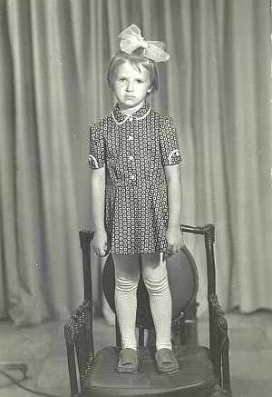

Кравчук (Цуприк) Ирена Николаевна
Родилась 18.06.1981 в г.Гродно. Образование высшее, экономическое. Работает В Гродненском ф-ле РУП "Белпочта" экономистом. В 2014 г. вышла за муж.
Ирене 5 лет
Родители:
Цуприк Николай Зиновьевич
;
Цуприк (Высоцкая) Эльжбета Вацлавовна
.
Братья/Сестры:
Павел (род.08.01.1978);
Владимир (род.25.12.1975, окончил , служил в );.
Дети:
Алина;
Андрей;
Карина.